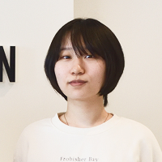

ABOUT
制作者について

概要
ネットサーフィンが好きで、『自分でWebサイトを作ってみたい』と思ったことがきっかけです。大学3年次にWeb制作会社AIコミュニケーションでインターンを経験し、その後、新卒として同社に入社しました。
入社後は、コーポレートサイトや採用サイトを中心に、ワイヤーフレームの作成、ビジュアル設計、提案資料の作成など、Web制作のさまざまな工程を担当しました。
その後、東京の事業会社では、LP制作やサービスサイトの改修、広告・バナーなどを担当してきました。フロントコーディングも学びながら、AIを活用した制作にも取り組んでいます。
対応してきた業界
教育、行政、医療・福祉、IT、制作会社、商社、採用、不動産、金融、化学・工業、美容・化粧品、電気・インフラ、車、物流、旅行・観光、食品・飲料、ペット、レストラン・飲食店など、幅広い業界を担当してきました。コーポレートサイト、サービスサイト、採用サイト、キャンペーンサイト・ティザーページ、EC、オウンドメディア、LP、ロゴ、パンフレット、チラシ、バナーなど、制作対象もさまざまです。